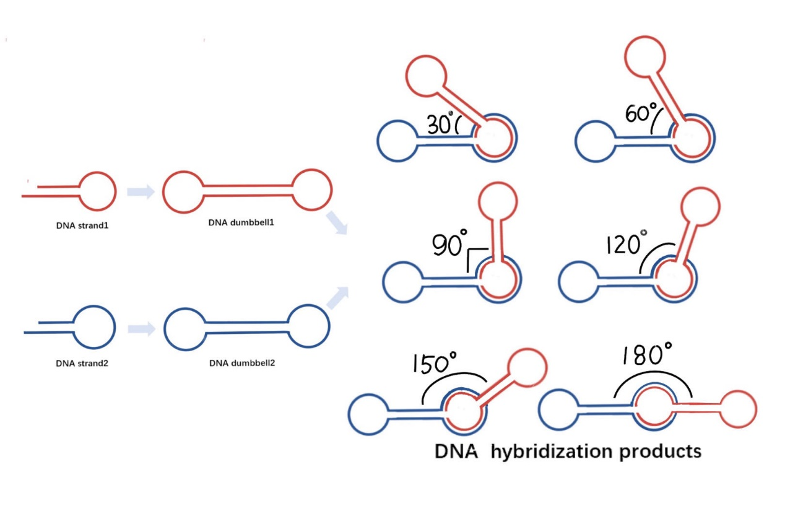
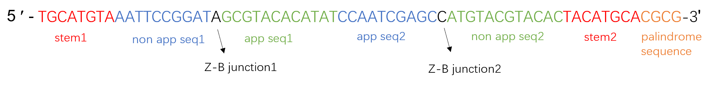
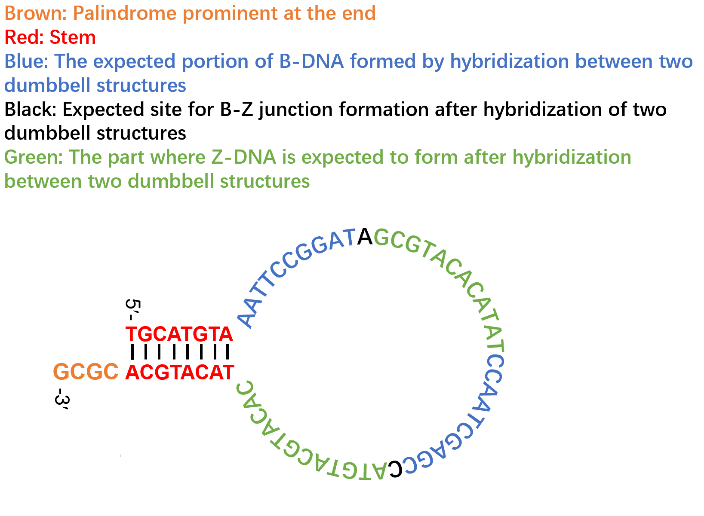
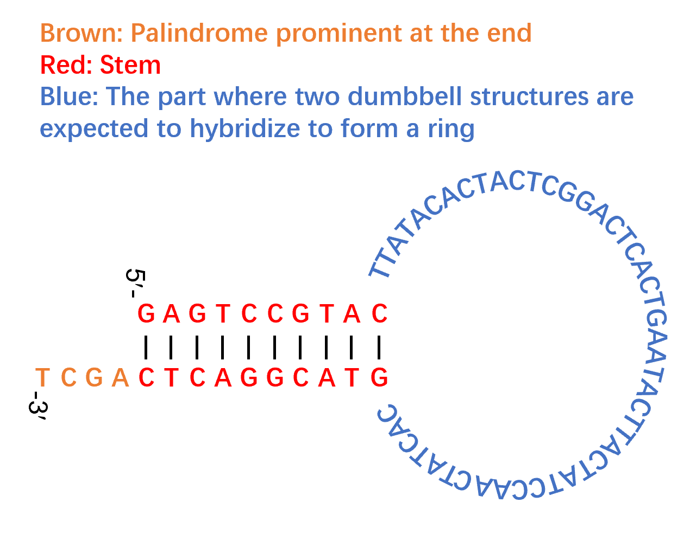
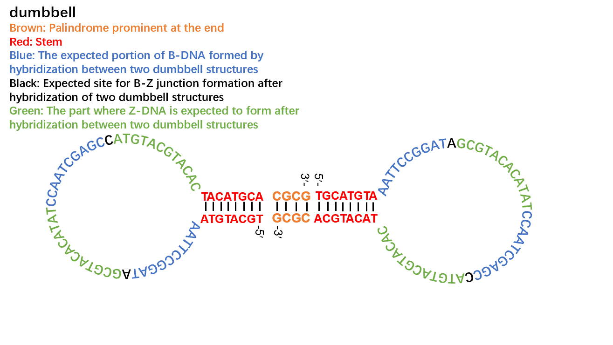
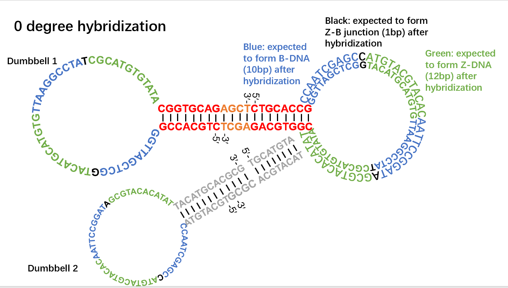
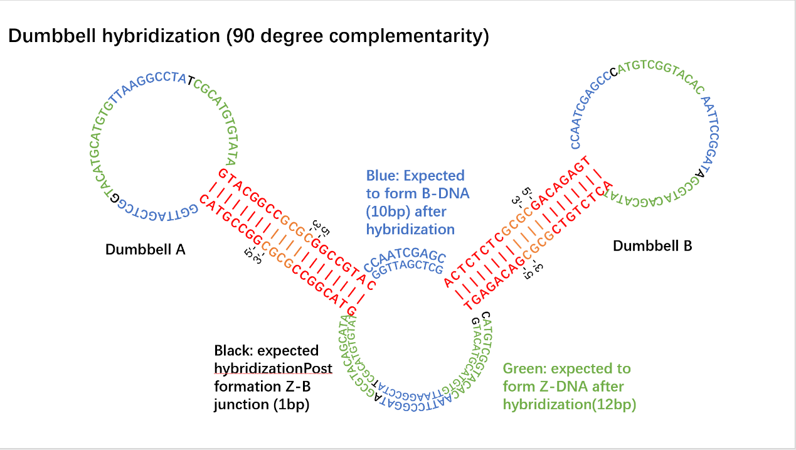
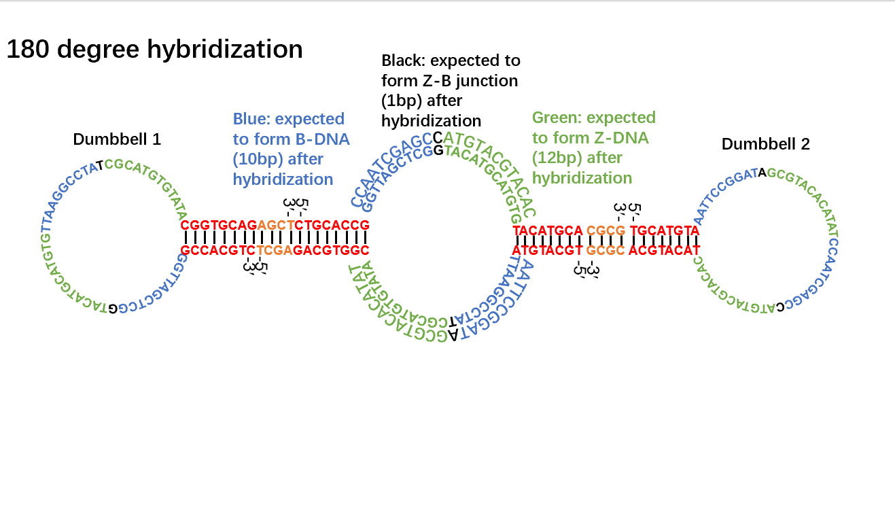

Designing DNA strands to self connect to form dumbbell rings, which are then hybridized to achieve the purpose of assembly. At the same time, by modifying the sequence, we can change the angle of hybridization between dumbbells, thereby forming other structures.

Fig 1. Dumbbells can cross at different angles

Fig 2. Components of DNA strands
The DNA strand for constructing dumbbells consists of the following parts：
If there is no requirement for the z-dna position to appear in the DNA loop, the app sequence can be omitted and all DNA loops can be changed to non app sequences.


Fig 3&4. Half dumbbells with and without app sequences
Half dumbbells can self connect to form dumbbells.

Fig 5. Dumbbell formed by half dumbbells self connecting
Next, we need to design sequences that can hybridize with dumbbell rings at different angles



Fig 6&7&8. DNA dumbbell hybridization at 0, 90 and180 angles
Orderly adding different types of dumbbells to the PCR instrument allows for splicing into different structures.